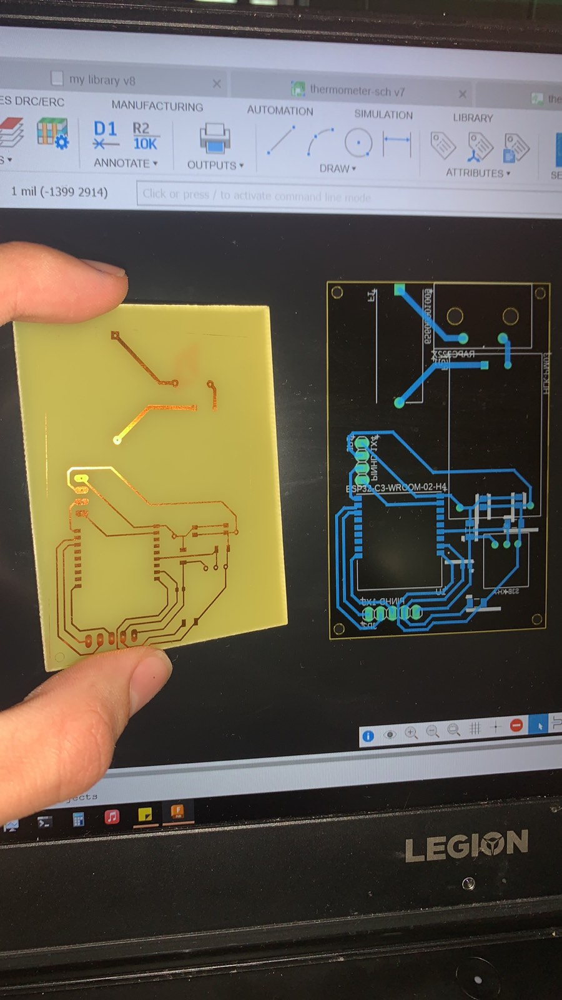
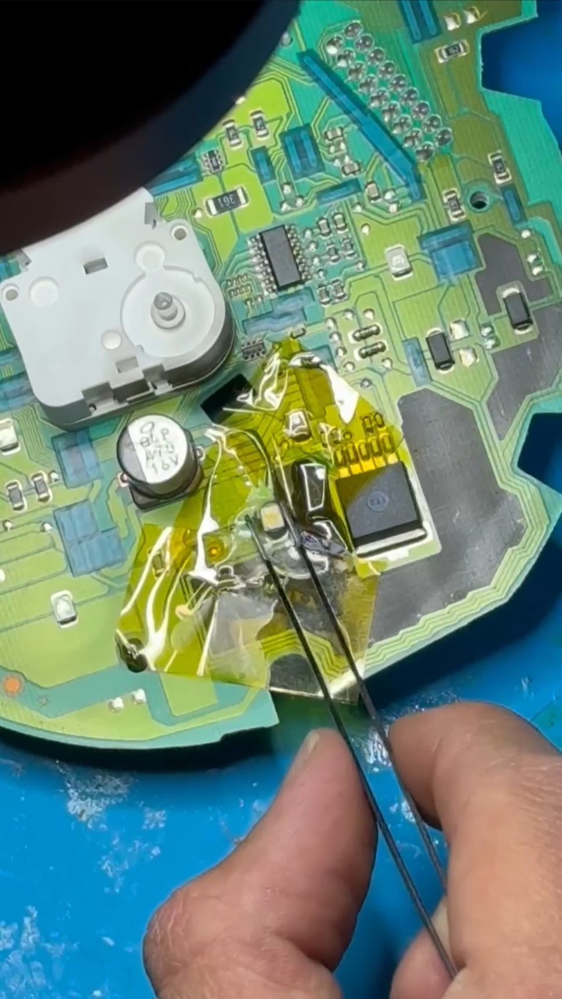
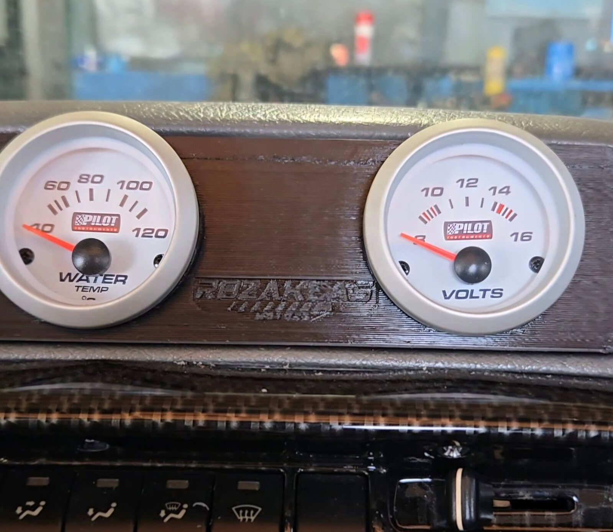
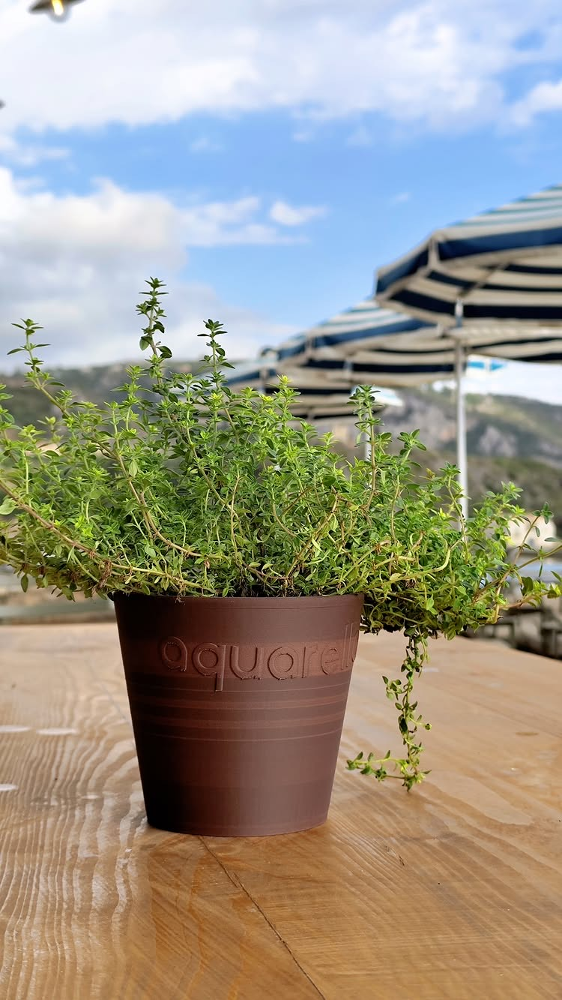

A complete full-stack autonomous irrigation system developed as a comprehensive real-world thesis project. Engineered entirely from scratch, the hardware features a custom PCB manufactured via photosensitive fabrication, integrating an ESP32 and a SIM module for remote telemetry. The backend operates on a custom-configured Raspberry Pi server running bespoke control software. The entire system is housed in a purpose-built, 3D-printed enclosure, demonstrating a true end-to-end deployment: from circuit design and embedded firmware to mechanical casing and remote connectivity.

Custom Embedded PCB Temperature Monitors
End-to-end development of custom PCB-based temperature monitoring systems. As a complete full-stack hardware project, this encompasses the entire product lifecycle: from bespoke schematic design, component selection, and precise PCB routing, to writing the low-level embedded firmware for accurate sensor data acquisition. The systems are fully assembled, programmed, and deployed as standalone functional units.

Instrument Cluster SMD Rework – Peugeot 207
Precision hardware rework of an automotive instrument cluster. Upgraded the visual interface via custom LED SMD replacements, requiring delicate board-level soldering, exact component matching, and careful reassembly to maintain factory-grade reliability.
Comprehensive restoration of an automotive ECU and its associated engine wiring harness. The project involved deep board-level troubleshooting and advanced microsoldering to repair internal electronic faults within the unit itself. Simultaneously, the vehicle's wiring harness was fully rehabilitated by diagnosing intermittent connection failures and professionally replacing damaged crimps and terminals. The entire setup was rigorously tested and deployed as a synchronized, reliable system built to withstand harsh engine-bay environments.

Engineering-Grade 3D Automotive Components
Design and fabrication of custom automotive replacement parts and functional components using CAD modeling and FDM 3D printing. Focused on practical fitment, durability and real-world usability for vehicle applications.

NFC Smart Planters & Digital Menus
Custom-designed 3D printed pots embedding NFC tags to provide interactive digital menus for hospitality environments.